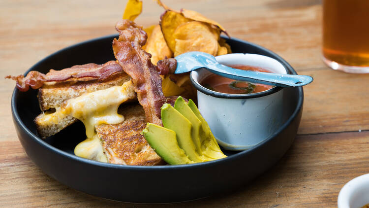
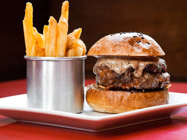

Petit Roquefort
Otro consentido es el grilled cheese, de presentación antojable a la vista y formidable sabor: trae queso oaxaca, cheddar y maasdam (estilo suizo) con cebollas caramelizadas en cerveza. El primer bocado entra en sintonía con la suavidad del pan surtido por Rosetta y la cremosidad del queso, además puedes chopearlo con sopa de tomate. Puedes toparte con Petit Roquefort en un Ceremonia, Corona Capital o Vive Latino, al igual que pedirlo a domicilio. Una muestra de que los platillos prácticos no necesariamente son faltantes de cariño al prepararse.

We Love Burgers (WLB)
No puedes llamarte un amante de las hamburguesas sin haber ido a WLB. Este local que impone su burgerfilia desde el nombre y aunque todas sus hamburguesas están al nivel de las mejores de la ciudad, la homónima las rebasa. La primera mordida del plato insignia son fuegos artificiales. El tocino con maple hilvanado al cheddar, un aro de cebolla en tempura de cerveza y la salsa bbq de la casa en un emparedado es lo más cercano al amor que un paladar puede probar.